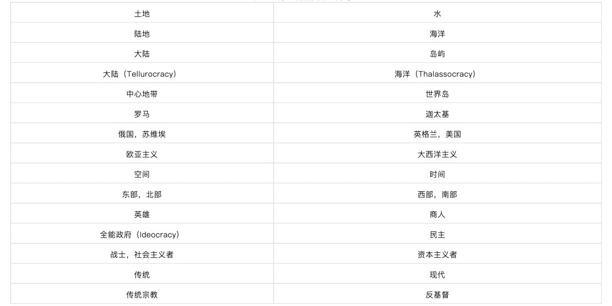
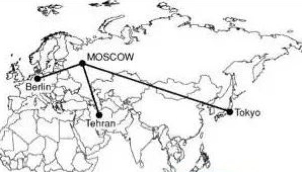

收录于合集
以下文章来源于文化纵横 ，作者孔元
 文化纵横 .
文化纵横 .
倡导文化重建，共同思想未来，发掘不一样的深度阅读。

作品简介 ****
作者： 孔元，北京大学法学博士，中国社会科学院欧洲研究所国别研究室副研究员，中国社会科学院大学外国语学院岗位教师。研究领域：欧洲社会文化、国别研究（英国外交及中英关系）、中欧关系、欧洲思想史。
来源： 《文化纵横》2015年第5期
导读
近期爆发的俄乌战争令世界惊诧。纷争之余，很多人也在追问：普京到底在想什么？俄罗斯的世界观体系究竟导向何处？ 这时候，被西方视为普京“大脑”的亚历山大·杜金及其地缘政治理论，再次获得高度关注。
本文深入剖析杜金“新欧亚主义”思想，点破西方对俄认知转变的思想根源。20世纪90年代末，俄罗斯所推行的亲西方改革遭遇失败，引发不满，进而催生出一些反西方自由化的政治思想， 杜金的新欧亚主义就是一个重要代表，其战斗目标就是美国主导的单极世界及其自由主义的意识形态。杜金将新欧亚主义视为反抗美国秩序的新理论旗帜，其核心在于发展欧亚大陆的联盟/轴心体系，并在此基础上解决欧亚地缘的安全困境。表现为三方面： （1）观念层面，借助传统主义立场，结合其他左右翼理论，来反抗美式哲学；（2）空间上，为了在全球范围内抗衡大西洋主义的影响，以俄罗斯为主导，发展多中心的联盟体系，构成一个全新的帝国联盟体系；（3）更广阔意义上，取代单极全球化以及西方的新殖民主义，倡导多元世界的新理念。
杜金的理论是地缘政治观和意识形态观的混合，其最终诉求则是将人放在既定的地理和文化结构中去理解，因此相比自由主义理论，相对更契合欧亚大陆国家的政治地理现实。了解杜金的理论，对于中国理解欧亚地缘问题及由此导致的安全战略问题，以及中国崛起可能受到的来自欧亚腹地的冲击和挑战，都有重要的启发。
欧亚主义回归与全球革命：
亚历山大 · 杜金的地缘政治
一
起火的世界及其反抗者
在欧美政客、媒体和知识分子们看来，2014年以来的世界愈发失序和混乱，这个一贯性情温顺的世界变得愈加桀骜不驯，叙利亚、伊斯兰国、乌克兰、伊朗、俄罗斯，乃至中国个个成为烫手山芋，甚至于连病毒埃博拉也不甘于寂寞，出现搅动人们的神经。而对于这诸种事件最敏感的莫非美国，因为在美国人看来，这个和平、进步和繁荣的世界一直是依恃美国的军事和经济实力得以保障，并且受着美国人所信奉的自由、民主和人权的价值观和生活方式的指引。因此任何失序的存在，首先都是针对美国所缔造的世界秩序，所危及的都是美国治下的和平，所摧毁的都是全世界人民对于美国世纪的信念。
但这个世界偏有心存不甘者，这种不甘就表现为各种针对美国的军事和政治行动，由于美国霸权俯视全球，这些运动也就更多的表现为不对称的恐怖主义和自杀式袭击。而一些更为精明的知识分子，则试图在观念层面挑战美国价值，寻求自由、民主、人权的替代方案， 亚历山大·杜金便是其中之一。这是一个令西方媒体感到恐惧的名字，但他的恐惧之处并不在于自杀式袭击或者发动圣战，而是致力于发展反西方，尤其反美国的新的大战略和意识形态。
而他之被关注，则端赖于乌克兰危机问题。2014年美国学者Anton Barbashin和Hannah Thoburn在 《外交事务》发文，指出杜金是普京的“大脑”， 是俄罗斯扩张主义意识形态的来源。而2014年末，美国《外交政策》杂志将其评为2014年度的全球思想者，并和叙利亚的恐怖主义领导人AbuBakral- Baghdadi，以及伊斯兰国JihadiJohn等并列agitators行列，令其声名鹊起。 在美国人看来，政治哲学家亚历山大·杜金一手策划了俄国扩张主义的意识形态，为俄国“吞并”克里米亚提供理论背书，因而成为普京名副其实的“智囊”。
**
**

普京与杜金
二
欧亚主义与新欧亚主义
欧美媒体中所指称的意识形态，就是杜金发展的新欧亚主义思想，它产生于俄罗斯的思想语境，首先是针对俄罗斯本身的政治处境问题，这一处境直接针对俄罗斯面对强势的西方话语所深陷的生存困境。 这种困境表现为俄罗斯传统主义和保守思想的一波三折，因此在了解杜金的新欧亚主义之前，我们首先需要回溯一下历史。
欧亚主义的思想渊源要回溯到19世纪，表现为当时的俄国知识分子对于俄国的欧化改革的担忧，体现为“斯拉夫派”作为一种话语形态在俄国的兴起。 如果我们将彼时的西欧理解为个体的、物质的、理性的“先进”文明的话，那么斯拉夫派的核心诉求就是力图保留俄国的本土社会结构、价值观念和政治经济制度，因此它所吸引的也多是受过良好教育的、富有的、见多识广的旧贵族。 对于始于彼得一世的西化改革，斯拉夫派无疑持否定态度，在他们看来，信奉罗马天主教和基督新教的西欧诸国是道德败坏的，而他们所发展出的政治和经济体系—立宪政府和资本主义—也是其堕落社会形态的必然结果。对恪守传统的斯拉夫分子们而言，俄国统一的东正宗教，无疑更有利于将俄罗人民紧密团结在一个基督教共同体中，维系一种自然、和谐和人道的相互关系，这种精神生活在制度上落实为俄国的农村村社制度，以及贵族制的政府形式。
与此同时，斯拉夫派对西欧发端的现代话语也并非完全无动于衷，而是与时俱进，从自身立场出发提出了俄国现代化的改革方略，比如解放农奴、削减官僚、确立言论出版和良心自由等公民权利等。但尽管如此，彼时俄国奋力追赶欧洲的焦躁心态蔓延于社会和宫廷，斯拉夫派遭遇到了俄国“西方派”的言论围剿，也为官方改革者所不容，并最终在尼古拉斯一世、亚历山大二世等君王的西化改革浪潮中销声匿迹。
可以说“西方派”和“斯拉夫派”两种话语形态的交锋，其实是俄国在遭遇到一个在军事、经济和文化观念上异常强大的西方，以及其所代表的进步的现代性之后所发展出的两种应对策略， 它们各自有其滋生的社会土壤，也是俄罗斯这种在地理上夹在两种、乃至多种文明体系中的国家的宿命。如果我们把它放在世界近代史的大时段中观察，俄罗斯和包括中国在内的广大非西方国家一样，都被迫对过于强势的西欧文明作出回应，并在这一调试过程中艰难地塑造新的政治认同。就这一历史过程本身而言，它并非线性的，乃至于将终结于某个历史时刻的，而更可能是回环曲折的，随着各种历史周期的变换而此消彼长，这在西欧的现代性叙事中呈现为各种形态的保守主义，而在非发端性的国家则表现为各种形态的本土传统话语的再生和更新。
正是在这种循环之中，俄罗斯的本土主义迎来了第二个春天。但这次它换了一个名字——欧亚主义，并且其直接针对的敌人却变成了两个——西方派和布尔什维克派，这两个派别在理论形态上化身为自由主义和社会主义。 如果我们把自由主义和社会主义视为欧洲现代性的左右互搏的两个侧面的话，那么欧亚主义从其诞生之初就蕴含着反对西方和现代性的理论倾向，也就潜伏着或多或少的“守旧”因子。如果要为这种理论找一个现实寄生者的话，那么最合适不过的就是俄国的保守“旧贵族”。伴随着十月革命的爆发，以及继之而来的内战，原有统治势力流亡异乡。对俄国革命的不满，促使其中的知识分子在观念层面寻找布尔什维克的替代方案，而这种智识探求的成果之一便是欧亚主义。 欧亚主义者对西方派和布尔什维克派同时提出质疑，在他们看来，俄国的未来出路既不在于导向西方，走立宪民主道路，也不在于通过阶级冲突和全球的无产阶级革命实现新天新地，而是将自身发展为一个独特的文明体系，并在此基础上实现自己的历史使命：创造一个既不同于欧洲，又不同于亚洲，但又同时包含二者特性的新权力中心和文明中心。 欧亚主义者们笃信西方终将衰落，而俄国将会成为新的世界模范。
在反对西方化问题上，欧亚主义和斯拉夫主义可谓如出一辙，二者都强调俄罗斯自身传统和发展道路的独特性，并且都批评由彼得一世开启的亲西方的改革政策，但他们也并非完全等同，比如后者更强调民族和种族的重要性，反对国家干预，而前者更倾向于精神、文化的亲缘性和共同的历史命运，并且认可国家在实现俄罗斯政治和社会改造中的价值。 在对待俄罗斯历史问题上，欧亚主义认可蒙古人在俄罗斯的统治，尤其注重蒙古帝国留给俄罗斯的强国家以及等级制服从的政治遗产,以及由此带给俄罗斯的亚洲血统和价值观念，因而强调亚洲对于俄罗斯身份认同形成的重要作用。 作为思想学说，它要远比斯拉夫主义更为系统和持久，同时欧亚主义的发展是几代思想家共同努力的成果，因此代际问题也让它变得更为复杂。
对于寻求布尔什维克替代方案的俄罗斯侨民而言，欧亚主义可谓正中下怀，因而其在俄罗斯侨民之间声誉日隆，不乏追随者，但这也注定了它无法在致力于社会主义现代化建设的苏联获得接纳。通过共产主义意识形态获得统治正当性的苏联政权，不可能容忍其他替代性意识形态的出现，因而欧亚主义也就只能沦为流亡者的思想。而这种流亡最终也会同流亡者本身一样，如果不能找到自己思想所寄居的家园,要么客死他乡，要么在时代境遇中寻找重生。
20世纪80年代末期，苏联事业开始遭遇危机，苏联政治也开始由亲西方的改革派所支配，但一系列自由化的改革措施不但没有缓解苏联的经济衰落，反而催生出更为严重的政治危机，最终导致1990年代的苏联解体。 对改革造成的局面的不满，在俄罗斯催生出一个反西方和自由化的政治运动，而新欧亚主义就是其中的一个支派，并最终在1990年代末发展为一只独立的政治力量，而杜金正是它的始作俑者和集大成者。 随着新欧亚主义的出现，之前的欧亚主义也被学界成为古典欧亚主义。
仅从名字就可以看出，新欧亚主义在思想上和古典欧亚主义有着亲缘关系，对此杜金予以承认，在他看来，作为一种意识形态和政治现象，新欧亚主义产生于古典欧亚主义的框架，接受古典欧亚主义的基本立场，并视其为理论出发点和根基，同时新欧亚主义的思想语境是后苏联时代俄罗人爱国主义的自我意识，因此致力于在新的文化、哲学和政治语境下，有意识地发展古典欧亚主义的基本原则。杜金将欧亚主义界定为一种结构主义理论，结构被视为区别于其部分的整体。同时杜金将文明视为欧亚主义哲学的核心概念，由于地球上存在不同的文明体，而每一种文明都有其自身的结构，正是这种结构确立了它所包含的要素，并赋予其意义和连贯性。在此基础上，人类社会就构成一个多元体系，每一种社会体系都由其特定的社会结构所决定，并无法与其他社会结构所兼容。
从这个视角出发，欧亚主义从其诞生之初，就志在瓦解西方社会的普世主义，及其以普世的名义强势改造其他社会形态的文化霸权心态。杜金认为这是古典欧亚主义和新欧亚主义内容连贯之所在。但二者也不能完全等同，因为新欧亚主义除了继承古典欧亚主义的基本观点立场，还大量吸收了欧洲的传统主义、新左派、新右派、人类学、地缘政治的思想观念，因而在新的语境之下实现了第二次重生。同时如果说古典欧亚主义主要针对罗马- 日耳曼欧洲，那么新欧亚主义则主要针对美国。
事实上，杜金的新欧亚主义有着明晰的战斗目标，就是美国主导的单极世界及其自由主义的意识形态。杜金将新欧亚主义视为一种反抗，这种反抗，首先是在观念层面反抗美国主导的单极世界所依赖的现代和后现代哲学，为此杜金借助传统主义立场，同时结合其他左右翼理论予以反击；这种反抗，对俄罗斯而言就是奉行某种形式的大陆主义，打造一个欧洲- 俄罗斯的共同空间—大欧洲计划；同时，从更广阔的意义上，新欧亚主义还被杜金视为取代单极全球化以及西方的新殖民主义，倡导多元世界的新理念。
三
新欧亚主义与地缘政治：两极世界与“新冷战”
已如前述，杜金的新欧亚主义继承了古典欧亚主义的基本立场，但在实质上二者仍然存有不同，这和不同时代思想者的问题意识相关。单就杜金而言，地缘政治和意识形态构成其理论结构的两个支点，它们分别对应美国所发展起来的去地缘化的单极全球化，以及其自由主义意识形态。如果说地缘问题在古典欧亚主义时代还只是若隐若现的话，那么杜金则把它张扬到了极致，成为他所发展的新欧亚主义的核心部分。杜金的地缘思想集中体现在他1997年出版的《地缘政治奠基》一书中。这本在军方协助下完成的著作，被美国学者John B. Dunlop誉为后共产时代最有影响的著作之一，被俄罗斯多所军事院校选为课堂教材。而作为一个学术现象，该书的出版也意味着地缘政治学作为一个学科在俄罗斯的正式确立，至此地缘政治学在俄国从一个无人知晓的冷门学问，开始演变为普遍接受的政治科学。以下简要介绍其在本书的基本观点。
（一）空间与地缘政治、陆地与海洋
尽管杜金将地缘政治学整合进其新欧亚主义的论述之中，但作为一个学科和知识体系，地缘政治学的思想渊源主要来自西欧，尤其是德国。在其著作第一部分和第二部分，杜金对地缘政治学做了思想史的研究，详细阐释了该学科的主要创建者，如Friedrich Ratzel、Rudolf Kjellen、Friedrich Nauman、Halford Mackinder、Alfred Mahan、Vidal de la Blache、Nicholas Spykman、Carl Haushofer、Carl Schmitt、Petr Savitsky，详细分析了我们业已熟识的基辛格、亨廷顿、乃至福山的基本观点，以及稍许陌生的欧洲新右派的地缘政治观。在这个意义上，杜金将自己视为学术“嫁接者”。就杜金对地缘政治的理解来说，他认为地缘政治是有关权力的世界观和科学，同时也是有关如何统治的科学，呈现出以下几个特点：第一，地缘政治是精英导向的，因而只可能在政治家层面进行运作，因而在本质上是反对民主原则的，因为知晓事物意义的能力勿容辩驳的尽可能限于领导者。第二，地缘政治家是有党派属性的，他们看重民族感情，并奉行爱国主义；第三，地缘政治是类似自由主义和马克思主义的一种世界观，通过人的空间属性来解释复杂的现实，在这个意义上，人的存在在环境上决定于地形、地貌等空间差异。空间对地缘政治分析而言，如同于金钱之于自由民主、生产关系之于马克思主义；第四，地缘政治尽管在今天以科学的面目示人，但并不是一门纯世俗的学问，总是和神圣地理密切相关，因而地缘政治学是神圣地理学的部分世俗化。
借用Carl Schmitt关于空间秩序（nomos）的界定以及陆地与海洋的二分法，杜金将世界历史描述为陆权和海权、陆地文明和海洋文明的殊死搏斗，而任何一方的胜利，都意味着历史的终结。陆权与海权的冲突在国际政治中表现为以美国为代表的大西洋主义和以俄罗斯为中心地带的欧亚主义的冲突。 为了在全球范围内抗衡大西洋主义的影响，俄罗斯有必要发展多中心的联盟体系，而每一个中心都自成一个大空间体系，因而这多个大空间的结合，就构成一个全新的帝国联盟体系。由于俄罗斯占据欧亚大陆的中心地带，因而在这个结盟体系中占据主导位置，而俄罗斯人民自然就成为了这一独特的欧亚主义使命的历史担纲者。
表1：关于世界历史的二元对立

杜金指出，这一角色是由俄罗斯人民的特殊气质决定的，俄国是一个弥撒亚民族，有着普世的、泛人类的意义，因而本性上适合担当这一庞大帝国的精神核心。俄罗斯民族的精神气质只能在帝国建设的使命中呈现出来，抛弃帝国，就意味着俄罗斯民族作为历史事实和文明现象的终结，而这无异于民族自杀。 没有帝国，俄罗斯作为一个民族将无法想象和维系。当然，肯定俄罗斯民族的帝国精神，并不是要张扬大民族主义，对此杜金心知肚明，在他看来，一个由俄罗斯主导的大陆帝国，需要张扬俄罗斯人民的民族感情，但这首先是一种体现为东正教的宗教情感，其次是俄罗斯种族，最后才是俄罗斯人民。同时， 俄罗斯的主导地位并非排斥或者压抑其他民族，而是在自主的基础上形成一种和谐共生的局面，紧密团结在俄罗斯周围，为了对抗美国主导的大西洋主义这一历史使命而奋斗。
（二）俄国—德国—日本—伊朗轴心

欧亚轴心体系
就联盟而言， 杜金首先将世界划分为四个文明区域：美国-拉美、非洲-欧洲、亚太地区、欧亚区域，并以俄国为中心点，构建欧亚主义联盟体系。 就俄国与欧洲的关系而言，杜金提出的应对策略是构建俄国—德国轴心来分割欧洲，两个国家根据影响范围来划分东欧，德国将因此获得对多数地处中东欧地区的新教和天主教国家的实际支配，同时作为交易的一部分，俄国将归还德国加里宁格勒（俄罗斯加里宁格勒州首府）。 至此德国摆脱掉目前的附庸地位，作为一个地缘政治主体重新进入历史。与此同时再构建一个柏林—巴黎的次轴心，作为整合西欧的基础，确保其不受大西洋主义的威胁。同时隔离英国，并通过鼓励分离主义和民族主义破坏英国领土完整。
在与东方国家关系上，构建俄国—日本轴心。日本在二战时期的大东亚的地缘政治实践，以及柏林—罗马—东京轴心为杜金留下了深刻印象。 在他看来，日本有着反西方的历史，并且占据亚太地区的战略地位，同时尽管是个岛国，却是个名副其实的有着大陆倾向和抱负的国家。 同时作为交易，俄国将归还日本千叶群岛。杜金将中国视为威胁，部分源于两个国家的地缘相邻，而更重要的在于中国自1970年代以来一度与美国走的过于亲近。
就与南部国家关系而言，构建俄国—伊朗轴心。在杜金看来，伊朗幅员辽阔、紧邻中亚，并且有着激进的反美情绪，以及传统取向的社会和宗教，因此是俄罗斯天然的好伙伴，同时与伊朗结盟，将使俄国获得通往南方暖水区的出海口。 俄国将鼓励伊朗统一整个阿拉伯世界，并将巴基斯坦和阿富汗纳入其统治之下。与此同时两个国家将通过合作方式来解决在高加索和中亚地区的地位问题。土耳其的亲西方倾向被杜金视为威胁，为此杜金主张鼓动土耳其境内的少数族裔叛乱。当然，杜金在土耳其问题上的立场也在摇摆，同时由于土耳其本身对外政策的两面性，杜金也在通过各种手段争取土耳其。事实上，杜金的地缘政治著作在土耳其相当受欢迎，从2003年首次在土耳其翻译出版，到2010年，该书已经出版到第7版。 在对土耳其读者的序言之中，杜金一方面直白指出作为NATO成员，土耳其的亲西方政策对欧亚主义构成威胁，但同时也积极劝说土耳其能够弃恶从良，加入到欧亚主义的大家庭来。
这便是杜金构想的欧亚主义联盟体系，它有着 明确的战略指向：陆权反抗海权、欧亚主义反抗大西洋主义；有着明确的敌友关系：一方是俄国、德国、日本、伊朗，一方是美国、英国、中国和土耳其。 每一个盟友，因其自身的地域和人口构成而自成其为一个帝国，而诸盟友又在反美的共同旗帜下，在俄罗斯的精神领导下，结成“帝国联盟”（empire of the empires），或曰大空间联邦（confederation of large spaces）。从地理版图而言，欧亚联盟其实覆盖了整个欧亚大陆，从而形成了和大西洋文明的二元对峙，只不过这次不再是海洋文明的咄咄逼人，而是陆地文明的全面反扑。
（三）俄罗斯的地缘政治
前已述及，杜金所构想的是“大空间”联盟，在他看来，只有控制大空间，将俄罗斯周边国家整合进俄罗斯，并在此基础上构建一个幅员更为辽阔的俄罗斯帝国，才能确保俄罗斯的地缘安全。就此而论，杜金将目前的俄罗斯联邦仅仅视为一个过渡现象，根本无法满足俄国作为地缘政治主体的战略需求。因此抛开其大空间联盟不论，俄国内部地缘政治的复杂性就需要进行清晰勾画，对此杜金又为在其著作中阐述了俄罗斯内部的地缘政治问题。在他看来，俄国必须首先将自己从目前的俄罗斯联邦发展成一个欧亚帝国，为此首先需要厘清俄国在西部与德国的势力范围，并与伊朗合作处理高加索和中亚地区的边界问题，而由此划定的俄国领土范围基本重现了当年苏联的领土版图。 对于2014年持续发酵的乌克兰问题，杜金早有论断，他同意麦金德的观点，认为只要乌克兰作为一个主权国家仍然存在，谈论欧亚大陆的地缘政治就没有意义。因此，出于地缘政治的考量，乌克兰的命运就是被肢解，西部成为中欧的一部分，而克里米亚连同基辅，成为“小俄罗斯”的部分，而东克兰则加入俄国。
除了外部边界问题，俄国本身内部民族构成的复杂性也是不小的挑战，在杜金看来，俄国的东、北部较为平静，而西、南部却有分裂主义的威胁，尤其危险的是被麦金德称为勒那地区（Lenaland）的分裂运动。杜金认为这片地区日益受到中国、大西洋势力的渗透，以及泛突厥主义的威胁，而雅库特共和国的分裂趋向也必须借助严厉的措施加以制止。除此之外，俄国境内的鞑靼斯坦共和国和巴士科尔托斯共和国也构成俄罗斯联邦内部的地缘威胁。对于这些民族分裂趋向，杜金毫无例外地主张严厉控制这些自治单位，并向这些地区进行大规模移民，最终在种族上俄化这些少数民族。
四
全球化与多中心：新的界定
值得注意的是，杜金的地缘思想并不是一成不变的，虽然它的反美初衷并没有改变，但具体的组织和实施方案却可能随着历史情势的改变而改变。已如前述， 杜金早年的地缘思想其实是一种极端二元对立的思维模式， 他把这种模式贯彻到了极致，并将世界历史还原为由俄罗斯领导的大陆帝国/欧亚帝国和以美国为核心的海洋帝国/大西洋帝国的两极世界，而这无异于另一场全球冷战。 随着年岁和阅历的增长，同时应对全球化时代反美斗争的新情势，团结一切可以团结的力量进行抗争，杜金的斗争哲学也渐趋缓和，其地缘思想也逐渐由两极对立转换为多极世界的和谐共存。
这种思想集中体现在杜金近期在英语世界出版的著作Eurasian Mission: an一Introduction to Neo- Eurasianism书中，该书系统阐述了新的历史情势下欧亚主义的立场、观念和斗争路径，可以视为杜金针对英语世界的读者所发动的新一轮文宣战。 杜金在该书中指出，新欧亚主义应对的是全球化时代的新问题，但它并不反对全球化本身，作为一个历史过程，民族国家时代的终结，以及全球化的出现本身是不可逆的。杜金反对的是美国提供的全球化图景，根据这种图景，全球化要么发展为美国主导的单极世界，要么发展为一个统一的世界政府，而这在杜金看来，本身就是西方模式的普世化，本身仍然是西方霸权思维的体现，是大西洋主义的具体实施。杜金将新欧亚主义视为单极全球化的替代方案，其核心便是多极化世界。 按照这种理解，在全球化的时代背景下，民族国家作为一种组织领土和人民的形式已经过时了，每个国家在这种情况之下只有三种选择：要么固守僵化的主权国家模式、要么就接受美国主导的自由秩序、要么就基于历史、文明和战略的共同性组建超国家政权形式（大空间）。在此背景下，欧亚主义提供的模式是组建大空间。据此世界将被划分为几个自主的生活空间，在各个空间内部由一系列国家组成联邦或者“民主帝国”，每一个空间都代表着多极世界的一极，按照自身的种族、文化、宗教和行政特性组织自己的管理模式。同时各个空间是彼此开放的，并在此基础上相互对话。
（一）四区域与欧亚大陆整合
杜金将整个地球划分为四个子午区：大西洋子午区（由美国主导的美洲大陆）、欧洲-非洲，中心是欧盟、俄国-中亚区域、太平洋区域。 除去大西洋子午区之外，其他三个区域都属于欧亚大陆一部分，因此欧亚主义首先将体现在这三个区域的自主和互动过程，同时在此基础上共同抗衡大西洋子午区。
各个子午区又按照大空间予以划分，每个大空间按照文明边界划分，并包括一系列民族国家或者国家的联合。 欧洲-非洲区由欧盟、伊斯兰- 阿拉伯大空间组成，俄国- 中亚区由三个间或重叠的大空间组成：俄罗斯联邦及其独联体国家（通过欧亚联盟的模式予以整合）、大陆伊斯兰国家，包括（土耳其、伊朗、阿富汗、巴基斯坦）、印度区域。太平洋区域包括两个大空间，即中国和日本，以及从属的印度尼西亚、马来西亚、菲律宾和澳大利亚。杜金认为这些国家有时也被认为从属于大西洋子午区。
杜金认为对于多极世界的存续来说，俄国-中亚子午区至关重要，正是它的存在，确保了美国的单极世界无法建立，并为欧洲区和亚太区的自足存在提供保证。 对于该地区的整合，杜金给出的措施是分别组建莫斯科—德黑兰、莫斯科—德里、莫斯科- 安卡拉轴心。对于动乱丛生的阿富汗和巴基斯坦，杜金认为应该消减两个国家作为独立国家的属性，将该区域转化为一个自由的伊斯兰联邦，同时效忠于莫斯科和德黑兰。而对于多元混杂的高加索地区，杜金给出的建议是根据该地区的种族和文化区分，将其发展为一个松散灵活的联邦体系，并使其分别和莫斯科、伊朗、安卡拉结成多变轴心体系。而对于中亚地区，则在欧亚联盟的框架之内完成整合。对于欧亚联盟的存续而言至关重要的是维系好莫斯科与哈撒卡斯坦、乌克兰的地缘三角关系，而对于那些加入欧亚联盟比较犹豫的乌兹别克斯坦和土库曼斯坦等国，杜金指出时间和情势会促使他们做出决定：主权在全球化时代已经变得无足轻重，他们要么被融入美国主导的自由世界秩序，要么在欧亚联盟的框架之内维系自身的文化和宗教认同。
（二）自主与联合：欧亚主义的权力结构
杜金细化了欧亚主义的权力方案，并将其具体展开在政治、经济、文化等各领域。权力将按照自主的原则予以组织，这意味着根据事物的属性予以分权，分权的依据是地方性事物或者战略性事物。凡是属于地方性事物的，如民事和行政事物、社会领域、文化和医疗、各种形式的经济活动，都属于自主管理的范围，对于这些事物，各个层级的权力机构将会基于自身传统、以及自身社会内部的表达形式予以组织。对于诸如宏观经济管理、控制战略性资源和通讯等战略性事物则需要有一个单一的战略中心来控制和管理，该中心将是大空间内部的地缘控制和政府中心。经济活动按照自由市场原则实施，而军工企业、交通、自然资源、能源等战略性产业则受到严密控制，同时战略中心有权根据国家和社会的整体目标来实施再分配。
欧亚主义反对美国的金融政策，反对由虚拟的金融操作来控制实体经济的异化模式，认为金融领域要为实体经济服务，致力于促进实体经济的健康发展，因此需要严密的金融监管。 而对于货币政策，则要在不同层级予以不同规定，单一的储备货币是必须的，但应该允许地方货币的存在，这种地方货币可以依据层级划分为地缘经济货币、大空间货币、地方货币等不同形式。
欧亚主义鼓励发展宗教，并将人们的精神生活视为无法为经济和社会利益取代的首要价值。在杜金看来，大西洋主义是一种既没有过去也没有未来的哲学形式和生活理念，而欧亚主义则结合了对过去的深刻而诚挚的信任，和对未来的开放态度，它接受人们对宗教传统的虔敬，但也鼓励自由的创造性研究。 对于传统宗教的支持和发展，将由战略中心予以组织、支持和协调，而任何破坏传统宗教的言论、教派和主张都将予以严厉禁止。而对于民族问题，欧亚主义的立场是尊重任何有自己文化和文明传统的民族身份，无论其大小强弱。它们将被视为属于全人类的文明遗产而予以尊重和珍惜。
五
新欧亚主义与第四种政治理论
以上是杜金的地缘政治思想，而就其所发展的意识形态而言，也是前后有别。 为了反抗自由主义，杜金在起初更多是借助欧洲传统主义的思想资源，借助欧洲内部对启蒙思想的批判，来发展自己反对欧洲/西方/美国的保守意识形态。而它落实在俄国的土壤中，就是要呼唤一个强调等级和服从的社会和政治，杜金将其最终落实为俄国的东正教传统。 但需要注意的是，杜金在其早期所构造以俄罗斯为中心的“帝国联盟”，本身就是一个太多异质文明的组合体，每一个帝国轴心，如伊朗、德国等，都有着自身的文明传统， 很明显不可能将东正教强加到其他盟友身上，成为帝国联盟的主导观念。在这个意义上，一个“诸帝国的帝国”将始终是一个多元，但却无法一统的松散局面，因而合众为一的工作就需要更具有包容性和普遍性的意识形态支撑。 在2007-2008年之间，杜金通过引入第四种政治理论最终完成了这项工作。杜金将其视为欧亚主义发展的一个崭新阶段，而借助第四种政治理论，欧亚主义也摆脱了西欧传统主义者所主张的“第三条道路”的路径依赖，为自己找到了一个新的理论基点。 在杜金看来，第四种政治理论是欧亚主义观念的延续——它承袭了欧亚主义反自由主义、反现代性、反欧洲中心论、结构主义取向、多极化的基本立场，但又实现了对左翼和右翼的创造性综合，创造出一种全新的，不归属于自由主义、处于自由主义左翼的共产主义和处于自由主义右翼的民族主义的第四种政治观念，从而彻底了超脱出欧洲现代性问题的思想框架，发展出一种面向未来的规范理论。
这种综合在杜金在于继承欧洲左右翼思想对自由主义的批判，但从传统主义的立场解刨左右翼思想。这首先意味着去除社会主义中的物质主义、无神论和现代主义的特征，而剥离掉奉行以“第三条道路”自居的民族主义立场中的种族主义和狭隘的民族立场。而这种创造性的综合就产生出一种不同于前面三种立场的第四种政治理论。 但这仅仅是项预备性工作，第四种政治理论还需要向传统以及前现代汲取思想灵感，这些思想渊源包括柏拉图的理念哲学、中世纪的等级社会、以及神学视域下的规范性的社会和政治理论。如此一来，围绕着反抗自由主义，就形成了一个最广泛的统一战线，它融合了左右翼，同时也吸纳了传统资源，并兼容于各大宗教的世界观。杜金认为这种新的意识形态的三条主要原则在于社会正义、国家主权和传统价值，同时尽管或许统合这么多颇有分歧的世界观并不容易，但他认为在面对一个共同的敌人的前提下，它们能实现最大程度的联合。
与此同时， 杜金也试图为第四种政治理论找到一个主体或者说行动者，在他看来，共产主义的主体是阶级，民族主义的主体是种族或民族，各种宗教的主体是信众团体，而第四种政治理论的主体就是海德格尔的此在（Dasein）概念。 杜金认为此在概念将是第四种政治理论作为一种包容性的意识形态发展和整合如此多元异象的观念群的最大公约数。在杜金看来，此在概念主要强调的是一个人和其所在的历史和文化传统的关联，但它的具体含义在不同的文化语境之中又都是不同的。借助这个概念，杜金实现了从多元语境中缔造一统的思想工作，同时由于如何理解此在要每个人联系自身的文化处境来分别定义，它又给了每一个联盟者足够的诠释空间。
杜金反对用左、中、右的类型学来理解第四种政治理论的思想光谱。在他看来，第四种政治理论既不是批评自由主义的左翼共产主义，也不是右翼的民族主义。就与后自由主义的关系而言，已经无法确定左翼和右翼的位置，而只剩下两种立场，要么服从（中心），要么反抗（边缘），而这两种立场都是全球性的。因此 第四种政治理论是一项共同事业的集合，它们来自于那些在现代化和后现代的过程中被抛弃、颠覆和贬损掉的事物和价值的反抗冲动。
同时杜金指出，作为一种意识形态，它并不是空洞的和抽象的，而是总是服务于一定的政治实践，并在一个具体的历史过程中展现自己的力量。 20世纪是自由主义、共产主义和民族主义三种意识形态相互争斗的世纪，三者产生于欧洲从传统向现代转型的过程之中，因而构成欧洲现代性问题的主要思想形态。 作为对欧洲传统的挑战，自由主义首先于18世纪产生，并逐渐发展成为主导欧洲的意识形态，与之相伴随的是一个日渐商业化的资本主义社会、自由平等化的代议政治以及个人化的社会伦理生活。共产主义产生于19世纪，主要针对自由资本主义时代所产生的阶级剥削问题，以及极端个人化导致的社会分裂问题，关注的是分配和公正问题，而民族主义则产生于20世纪，主要来自对个人化、原子化的自由社会的反抗，看重的是一个人的集体身份，这种身份通过历史和传统赋予人一种身份认同，从而缓解向现代转型过程中带来的焦躁感和无措感。民族主义的极端形式就是种族主义和法西斯主义。
杜金认为，三种意识形态各自依托不同的概念相互竞争，自由主义看重个人，而共产主义强调阶级，民族主义重视民族。 观念层面的竞争，伴随着实际的政治斗争，首先表现为欧洲的无产阶级革命，其次则是第二次世界大战对抗法西斯主义，最后则是二战之后围绕自由主义和社会主义产生的冷战对峙。随着1991年的苏东剧变，自由主义战胜共产主义大获全胜，人类也进入由美国主导的单极全球化时代。
而在后现代（全球化、后自由主义、后工业社会）时代，以个人为核心的自由主义也渐渐失其实质和进取精神， 逐渐退缩进后现代而变得萎靡不振，自由主义所诉诸的个人，也演变为空洞的、没有任何集体身份的形式概念：它没有宗教，因而是世俗主义的；它没有民族，因为是普世主义的；它没有阶级，因为每个人都成了中产阶级；它没有祖国，因为它倡导人权；它甚至没有了性别，因为是男是女已经无所谓了。
在反抗之余，第四种政治理论也有肯定的东西，那就是传统和宗教、等级和家庭。 在杜金看来，传统及其代表的价值在现代性来临之际被推翻，于是“上帝死了”、“世界驱魅”、“神圣终结”，现代性的精神在于用人取代了神、用哲学和科学取代了宗教，用理性和科技的建构力量取代了启示和信仰的位置。而正是现代性的精神，孕育了自由主义、共产主义和民族主义这三种意识形态，因而对现代性的反抗就意味着回归传统，以及尤其所代表的神圣价值，这意味着宗教的回归。而一旦宗教回归，那么后现代，及其代表的价值体系就自然意味着放逐，成为“敌基督的国度”。在这个意义上，第四种政治理论乃是要现代哲学对人的行上存在的遗忘，找回人类存在的本体论和神学根基。而一旦人在形而上层面找回自己，就必然意味着一个全新的等级结构的形成，在这个结构中，家庭、民族重新找到自己的存在空间，在政治层面，这意味着一种帝国秩序的回归。
六
反抗与全球革命
前已述及，杜金所发展出的意识形态，是一种反抗的哲学，它有明确的敌人—自由主义，为此它试图借用“第四种政治理论”来整合所有对自由主义持异议的观点和立场。而这所有的一切要想获得生机和活力，就必须在另外一个关键点上撇清和自由主义的界限，那就是革命问题。 归根结底，这个现代世界来源于一场革命建立的新秩序，自由主义正当化了这场革命，但很快就通过反革命的叙事终结了其他革命的可能。因此革命在自由主义的叙事中，只在一个瞬间闪现而后销声匿迹，而反革命则成为了自由主义的永恒主题。在这个意义上，任何声称与自由主义毫不妥协斗争的哲学，最后必然发展出自身的革命立场。
在杜金看来，人类历史又来到了一个节点， 一个末世时代的阴影笼罩着全人类，资本主义已经终结，资源也业已枯竭，社会瓦解了，民族和人民消散了，知识被意见消解，进步的信念消失了，甚至于个人也变得无足轻重。这逼促任何无法忍受现状的人站出来反抗，并从这层废墟中建立一个崭新的“正常的”世界，它需要一个不同于金融资本主义的新经济形式、承认自然资源的有限性，并从全人类利益出发，有计划的使用和分配资源，而人类的生存也不再是破碎的、分裂的原子式的个人，而是通过一种集体结构，通过文化、知识、语言、实践和信念，发展世世代代的认同，这种认同最终是为了保存每个人的尊严、实质，以及他的整全性，在此基础上，民族和国家得以发展自主的、个性的、传统的模式，人类将重新对未来充满希望，而世界也将变得多样和多元。
在杜金看来，这一切的实现都需要一场新的全球革命，它旨在通过激进的手段通过这个全球的寡头统治，以及它所以来的各国精英。而这在观念层面，就意味着发展一场针对自由主义意识形态的全面战争。 承载这种价值的西方世界将会毁灭，而操纵这一切的幕后黑手—美国将被视为绝对的恶予以剪灭。“美利坚帝国必须被摧毁！”而任何赞成或者支持全球自由霸权的人或集团，都将是这场革命运动的敌人。而伴随着革命、牺牲和死亡，这个弊病缠身、行将就木的世界将被摧毁，在这片废墟之上人类将赢得新生。这种新生预示一个崭新的未来，一个有机的、团结的社会，一个存在无限开放和对话可能的新国度，一个人类文明发展的新起点，一个欧亚主义的新天新地。
结语
杜金的地缘政治观并不是每个人都会认同，但地缘政治在当今全球秩序中的核心位置却是不容否认的，尤其是位于欧亚大陆上的诸个国家和文明体，天然接壤、复杂族群、利益交汇等，都促使审慎的政治家探寻审时度势的地缘战略。
就俄欧关系而言，尤其值得我们重视的是普京一直呼吁和德国一道建设“大欧洲”的战略建议，通过建设一个从里斯本到海参崴的经济、文化和安全空间，俄国的自然资源可以被用于欧洲的工业和技术发展，而俄国也为欧盟提供了通向亚太地区的地缘和战略通道。而这项决议之所以迟迟无法采行，根源在于欧盟共同体建构在政治上将民主的政权原则纳为其核心议题，在安全上局限于北约的军事框架。 对于俄罗斯本身的地缘结构而言，采纳民主原则无异于将自身的共同体瓦解，也正是基于这种顾虑，俄国和欧盟围绕乌克兰问题展开了长久的拉锯战，背后实质是两种秩序观的冲突。而随着全球经济中心往亚洲转移，以及中俄关系日益亲近，一个如卡耐基莫斯科中心Dmitri Trenin所言的从“上海到圣彼得堡”的“大亚洲”也逐渐呈现出来。这诸种政治情势，都可以在杜金著作中找到痕迹。
而在价值观层面，杜金的努力则是试图缓解苏联解体后的俄罗斯意识形态缺乏的焦虑症。 不同于中国一直坚持的“中国特色社会主义”这一理论旗帜，俄罗斯在苏联解体后迟迟找不到前进方向，也正是因为这种迷茫才使得在后冷战初期俄罗斯采行了全面倒向西方的改革策略，其结果是不但没有获得认同，反而产生经济寡头化，乃至国家解体的政治危机。 正是基于此，我们可以理解普京近年来一直主张的“保守主义”价值观，来对冲美欧自由主义思潮的咄咄逼人。 而这种姿态，不仅有助于缓解自由主义对非西方社会体系的瓦解力量，而且有利于争取西方社会内部的部分舆论，比如欧洲的各种右派势力，甚至于美国的茶党等保守派。作为一种反抗自由主义的学说，杜金的第四种政治理论可以说穷尽了一切统战需要的可能，包括因分配问题而迥异于自由主义的左派，和因理性主义而与自由主义发生裂隙的右翼。当然，就其思想底色而言，杜金一贯坚持的是其文明概念，它反对一切普世主义的主张，并认可一个多元文化共存的和谐世界。从这个视角出发，自由主义本身也被和西方基督教世界的价值观关联起来，而予以特殊化和地方化。当美国强势之时，美国可以全球推行其自由主义价值观，并通过逐渐趋同化而走向历史终结，而在后美国时代，每个国家都在寻找整合自己的新制度体系和价值观，由此导致一场全球的思想复兴运动，如伊斯兰国的圣战、日本右翼、俄国保守价值观等。
正是地缘政治观和意识形态观的混合，成就了杜金的新欧亚主义的理论价值，而其最终诉求则是将人放在既定的地理和文化结构之中去理解，而不是自由主义所设想的自然状态或海洋世界。这无疑契合了欧亚大陆国家的政治地理现实，而正是这个无法为海洋世界所染指的欧亚腹地，赋予了这种学说一种精神价值和神秘色彩。
了解这些，对于中国而言也不无裨益。不同于俄罗斯封闭的地缘处境，中国面临着广阔的太平洋，并借助大洋彼岸的美国的产业转移实现了自己的经济腾飞，然后又试图借助“一带一路”战略将这种产业发展，通过欧亚大陆延伸到大西洋。而在这一战略实施过程中，地缘问题，由此导致的安全战略问题，以及随着中国崛起所不断产生的中国文化的普世主义心态，都将不断面临来自欧亚腹地的冲击和挑战。这无疑也将是我们观察和思考杜金等学者的意义所在。
排版 | 黄紫蓝
文章来源于《文化纵横》2015年第5期
文章观点不代表本平台观点